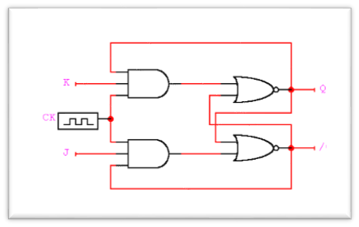

Aspectos básicos de la computación paralela
La computación paralela es una forma de cómputo en la que muchas instrucciones se ejecutan simultáneamente, operando sobre el principio de que problemas grandes, a menudo se pueden dividir en unos más pequeños, que luego son resueltos simultáneamente (en paralelo).
Hay varias formas diferentes de computación paralela: paralelismo a nivel de bit, paralelismo a nivel de instrucción, paralelismo de datos y paralelismo de tareas
El paralelismo se ha empleado durante muchos años, sobre todo en la computación de altas prestaciones, pero el interés en ella ha crecido últimamente debido a las limitaciones físicas que impiden el aumento de la frecuencia. Como el consumo de energía y por consiguiente la generación de calor de las computadoras constituye una preocupación en los últimos años, la computación en paralelo se ha convertido en el paradigma dominante en la arquitectura de computadoras, principalmente en forma de procesadores multinúcleo.
Tipos de computación paralela
- Paralelismo a nivel de bit: los microprocesadores de 4 bits fueron sustituidos por unos de 8 bits, luego de 16 bits y 32 bits, esta tendencia general llegó a su fin con la introducción de procesadores de 64 bits, lo que ha sido un estándar en la computación de propósito general durante la última década.
- Paralelismo a nivel de instrucción: un programa de ordenador es, en esencia, una secuencia de instrucciones ejecutadas por un procesador. Estas instrucciones pueden reordenarse y combinarse en grupos que luego son ejecutadas en paralelo sin cambiar el resultado del programa.
- Paralelismo de datos: se centra en programas con ciclos y en la distribución de los datos entre los diferentes nodos computacionales que deben tratarse en paralelo.
- Paralelismo de tareas: cálculos completamente diferentes se pueden realizar en cualquier conjunto igual o diferente de datos.
Clasificación de las arquitecturas paralelas
Las computadoras paralelas pueden clasificarse según el nivel de paralelismo que admite su hardware: equipos con procesadores multinúcleo y multi-procesador que tienen múltiples elementos de procesamiento dentro de una sola máquina y los clústeres, procesador paralelo masivo y computación en malla que utilizan varios equipos para trabajar en la misma tarea. Muchas veces, para acelerar la tareas específicas, se utilizan arquitecturas especializadas de computación en paralelo junto a procesadores tradicionales.

Arquitectura secuencial
Los valores de las salidas, en un momento dado, no dependen exclusivamente de los valores de las entradas en dicho momento, sino también de los valores anteriores.
El sistema secuencial más simple es el biestable. La mayoría de los sistemas secuenciales están gobernados por señales de reloj.
Organización del espacio de direcciones de memoria
- Organización lógica: los programas a menudo están organizados en módulos, algunos de los cuales pueden ser compartidos por diferentes programas, algunos son de sólo-lectura y otros contienen datos que se pueden modificar. La gestión de memoria es responsable de manejar esta organización lógica, que se contrapone al espacio de direcciones físicas lineales. Una forma de lograrlo es mediante la segmentación de memoria.
- Organización física: la memoria suele dividirse en un almacenamiento primario de alta velocidad y uno secundario de menor velocidad. La gestión de memoria del sistema operativo se ocupa de trasladar la información entre estos dos niveles de memoria.
Sistemas de memoria compartida de multiprocesadores
- Redes de interconexión dinámica: son convenientes en los casos en que se desee una red de propósito general ya que son fácilmente reconfigurables. También por eso, este tipo de Redes facilitan mucho la escalabilidad. En general, las redes dinámicas necesitan de elementos de conexión específicos como pueden ser árbitros de bus, conmutadores, etc.
- Memoria Compartida Centralizada: la memoria es compartida por todos los procesadores y accesible desde cualquiera. Descompuesta en varios módulos para permitir el acceso concurrente de varios procesadores. Cada procesador debe tener un espacio de direccionamiento suficientemente amplio como para poder direccionarla completamente.
- Redes de medio compartido: ocurre cuando varios host tiene acceso al mismo medio. Por ejemplo, si varios PC se encuentran conectados al mismo cable físico, a la misma fibra óptica entonces se dice que comparten el mismo entorno de medios.
- Redes conmutadas: Consiste en un conjunto de nodos interconectados entre si, a través de medios de transmisión, formando la mayoría de las veces una topología mallada, donde la información se transfiere encaminándola del nodo de origen al nodo destino mediante conmutación entre nodos intermedios. Una transmisión de este tipo tiene 3 fases:
- Establecimiento de la conexión
- Transferencia de la información
- Liberación de la conexión
Los sistemas de memoria distribuida o multicomputadores pueden ser de dos tipos básicos. El primer de ellos consta de un único computador con múltiples CPUs comunicadas por un bus de datos mientras que en el segundo se utilizan múltiples computadores, cada uno con su propio procesador, enlazados por una red de interconexión más o menos rápida. Se simula memorias compartidas y se usan los mecanismos de comunicación y sincronización de sistemas multiprocesadores.
Clases de redes de interconexión:
- Formación lineal: Se trata de una red unidimensional en que los nodos se conectan cada uno con el siguiente mediante N-1 enlaces formando una línea.
- Mallas y toros: Esta red de interconexión es muy utilizada en la práctica. Las redes en toro son mallas en que sus filas y columnas tienen conexiones en anillo, esto contribuye a disminuir su diámetro. Esta pequeña modificación permite convertir a las mallas en estructuras simétricas y además reduce su diámetro a la mitad.
- Clúster: es un grupo de ordenadores débilmente acoplados que trabajan en estrecha colaboración, de modo que en algunos aspectos pueden considerarse como un solo equipo. Los clústeres se componen de varias máquinas independientes conectadas por una red. Mientras que las máquinas de un clúster no tienen que ser simétricas, de no serlo, el balance de carga es más difícil de lograr.
Los clúster son usualmente empleados para mejorar el rendimiento y la disponibilidad por encima de la que es provista por un solo computador típicamente siendo más económico que computadores individuales de rapidez y disponibilidad comparables. De un clúster se espera que presente combinaciones de los siguientes servicios:
- Alto rendimiento
- Alta disponibilidad
- Balance de carga
- Escalabilidad
Consideraciones Sobre Rendimiento De Los Clúster:
para diseñar, implementar, probar y mantener un clúster se requiere un entendimiento básico pero claro de hardware de computadoras, de redes de computadoras y de sistemas operativos y la habilidad para investigar algunos tópicos especializados, como dispositivos de interconexión de Alta velocidad, tal vez reintroducirse a lenguajes de programación.
Aplicaciones de clúster: